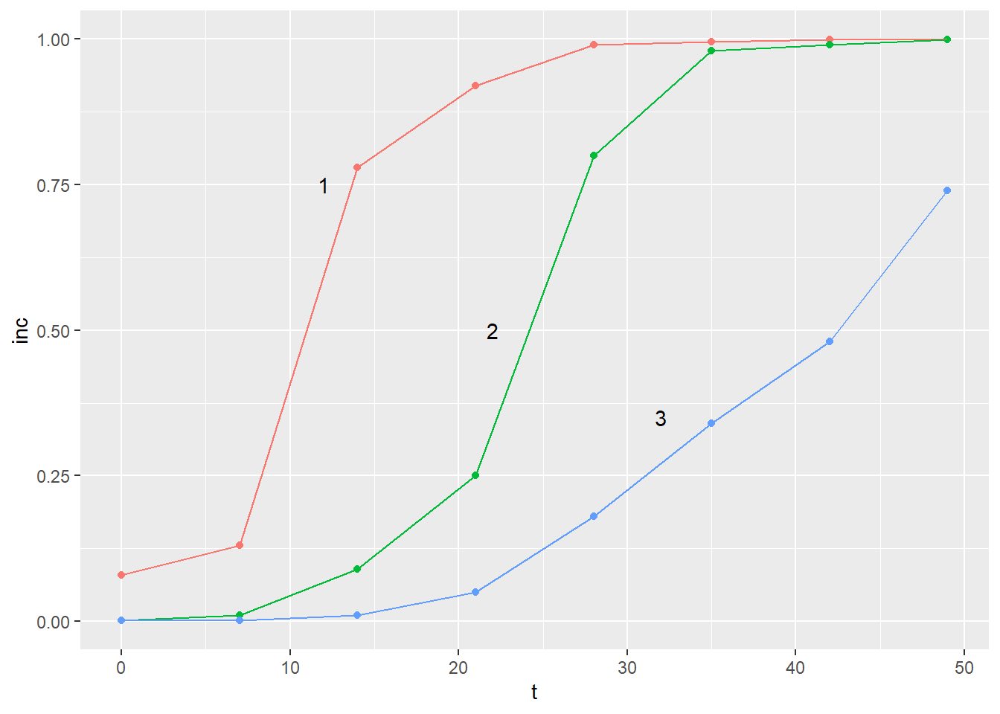
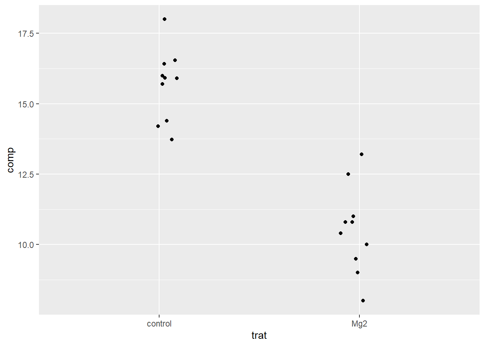
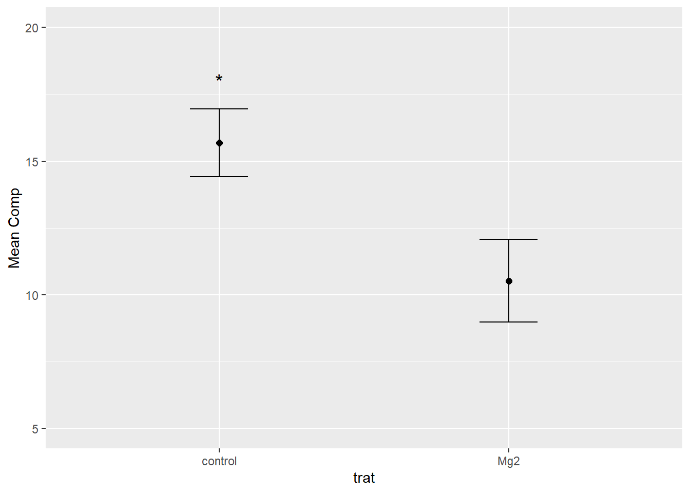

install.packages("datapasta")
install.packages("janitor")Aula 4
Nesta aula, serão apresentados diversas operações com dados datapasta, para copiar e colar dados como vetores, data frames e tribbles. Além disso, serão feitas tabelas de contingência e gráficos de barras para análise de dados categóricos, utilizando as funções count e tabyl do pacote janitor.
Carregando os pacotes
Inicialmente, serão instalados (datapasta e janitor) e carregados os pacotes que serão necessários durante esta aula:
library(datapasta)
library(janitor)
library(tidyverse)
library(ggthemes)Pacote datapasta
O pacote datapasta fornece ao RStudio funções adicionais que permitem copiar e colar dados de outras fontes.
Para usá-lo é preciso criar um novo chunk, copiar os valores desejados, clicar em Addins e selecionar o formato em que os valores serão colados.
Paste as vector
Para colar valores como um vetor, seleciona-se “Paste as vector”
vet <- c("comp", "9", "12.5", "10", "8", "13.2", "11", "10.8", "9.5", "10.8", "10.4", "13.72", "15.91", "15.7", "14.2", "15.9", "16.54", "18", "14.4", "16.41", "16")Paste as data.frame
Além disso, também é possível colar valores como um data frame. Nesse caso, valores presentes em mais de uma coluna são copiados e colados selecionando a função “Paste as data.frame”:
dat <- data.frame(
stringsAsFactors = FALSE,
trat = c("Mg2","Mg2",
"Mg2","Mg2","Mg2","Mg2","Mg2","Mg2","Mg2",
"Mg2","control","control","control","control",
"control","control","control","control","control",
"control"),
rep = c(1L,2L,3L,4L,
5L,6L,7L,8L,9L,10L,1L,2L,3L,4L,5L,6L,7L,
8L,9L,10L),
comp = c(9,12.5,10,8,
13.2,11,10.8,9.5,10.8,10.4,13.72,15.91,15.7,
14.2,15.9,16.54,18,14.4,16.41,16))
dat trat rep comp
1 Mg2 1 9.00
2 Mg2 2 12.50
3 Mg2 3 10.00
4 Mg2 4 8.00
5 Mg2 5 13.20
6 Mg2 6 11.00
7 Mg2 7 10.80
8 Mg2 8 9.50
9 Mg2 9 10.80
10 Mg2 10 10.40
11 control 1 13.72
12 control 2 15.91
13 control 3 15.70
14 control 4 14.20
15 control 5 15.90
16 control 6 16.54
17 control 7 18.00
18 control 8 14.40
19 control 9 16.41
20 control 10 16.00Paste as tribble
Outra opção para criar um novo data frame é colar utilizando a opção “Paste as tribble”:
dat2 <- tibble::tribble(
~trat, ~rep, ~comp,
"Mg2", 1L, 9,
"Mg2", 2L, 12.5,
"Mg2", 3L, 10,
"Mg2", 4L, 8,
"Mg2", 5L, 13.2,
"Mg2", 6L, 11,
"Mg2", 7L, 10.8,
"Mg2", 8L, 9.5,
"Mg2", 9L, 10.8,
"Mg2", 10L, 10.4,
"control", 1L, 13.72,
"control", 2L, 15.91,
"control", 3L, 15.7,
"control", 4L, 14.2,
"control", 5L, 15.9,
"control", 6L, 16.54,
"control", 7L, 18,
"control", 8L, 14.4,
"control", 9L, 16.41,
"control", 10L, 16
)
dat2# A tibble: 20 × 3
trat rep comp
<chr> <int> <dbl>
1 Mg2 1 9
2 Mg2 2 12.5
3 Mg2 3 10
4 Mg2 4 8
5 Mg2 5 13.2
6 Mg2 6 11
7 Mg2 7 10.8
8 Mg2 8 9.5
9 Mg2 9 10.8
10 Mg2 10 10.4
11 control 1 13.7
12 control 2 15.9
13 control 3 15.7
14 control 4 14.2
15 control 5 15.9
16 control 6 16.5
17 control 7 18
18 control 8 14.4
19 control 9 16.4
20 control 10 16 A função tribble também pode ser utilizada para colar dados obtidos da internet.
Exemplo 1:
dat3 <- tibble::tribble(
~Estado, ~Cidade, ~Pop.2010, ~Pop.2022, ~Variacao,
"MG", "Serra.da.Saudade", 815, 833, "2,20%",
"SP", "Bora", 805, 907, "12,70%",
"GO", "Anhanguera", 1.02, 924, "-9,40%",
"MT", "Araguainha", 1.096, 1.01, "-7,80%",
"SP", "Nova Castilho", 1.125, 1.062, "-5,60%",
"MG", "Cedro do Abaete", 1.21, 1.081, "-10,70%",
"RS", "Andre da Rocha", 1.216, 1.135, "-6,70%",
"TO", "Oliveira de Fátima", 1.037, 1.164, "12,20%",
"RS", "União da Serra", 1.487, 1.17, "-21,30%",
"MG", "São Sebastião do Rio Preto", 1.613, 1.259, "-21,90%",
"RS", "Coqueiro Baixo", 1.528, 1.29, "-15,60%",
"RS", "Engenho Velho", 1.527, 1.296, "-15,10%"
)
dat3# A tibble: 12 × 5
Estado Cidade Pop.2010 Pop.2022 Variacao
<chr> <chr> <dbl> <dbl> <chr>
1 MG Serra.da.Saudade 815 833 2,20%
2 SP Bora 805 907 12,70%
3 GO Anhanguera 1.02 924 -9,40%
4 MT Araguainha 1.10 1.01 -7,80%
5 SP Nova Castilho 1.12 1.06 -5,60%
6 MG Cedro do Abaete 1.21 1.08 -10,70%
7 RS Andre da Rocha 1.22 1.14 -6,70%
8 TO Oliveira de Fátima 1.04 1.16 12,20%
9 RS União da Serra 1.49 1.17 -21,30%
10 MG São Sebastião do Rio Preto 1.61 1.26 -21,90%
11 RS Coqueiro Baixo 1.53 1.29 -15,60%
12 RS Engenho Velho 1.53 1.30 -15,10%
Exemplo 2:
dat4 <- tibble::tribble(
~Ranking, ~País, ~`Produção.em.2022/23.(milhões.de.sacos.de.60.kg)`, ~Participação.total.no.mercado,
"1","Brasil",664,"38,1 %",
"2","Vietnã",311,"17,8%",
"3","Colômbia",116,"6,7%",
"4","Indonésia",97,"5,6%",
"5","Etiópia",835,"4,8%",
"Total","Mundo",170019,"100%")
dat4# A tibble: 6 × 4
Ranking País Produção.em.2022/23.(milhões.de.sac…¹ Participação.total.n…²
<chr> <chr> <dbl> <chr>
1 1 Brasil 664 38,1 %
2 2 Vietnã 311 17,8%
3 3 Colômbia 116 6,7%
4 4 Indonésia 97 5,6%
5 5 Etiópia 835 4,8%
6 Total Mundo 170019 100%
# ℹ abbreviated names: ¹`Produção.em.2022/23.(milhões.de.sacos.de.60.kg)`,
# ²Participação.total.no.mercadoTrabalhando com alguns dados
Importando
Utilizando a função “paste as tribble”, os dados presentes neste link (https://r4pde.net/temporal-fitting.html#entering-data - seção 10.4) serão importados:
pepper <-
tribble(
~t, ~`1`, ~`2`, ~`3`,
0, 0.08, 0.001, 0.001,
7, 0.13, 0.01, 0.001,
14, 0.78, 0.09, 0.01,
21, 0.92, 0.25, 0.05,
28, 0.99, 0.8, 0.18,
35, 0.995, 0.98, 0.34,
42, 0.999, 0.99, 0.48,
49, 0.999, 0.999, 0.74
)
pepper# A tibble: 8 × 4
t `1` `2` `3`
<dbl> <dbl> <dbl> <dbl>
1 0 0.08 0.001 0.001
2 7 0.13 0.01 0.001
3 14 0.78 0.09 0.01
4 21 0.92 0.25 0.05
5 28 0.99 0.8 0.18
6 35 0.995 0.98 0.34
7 42 0.999 0.99 0.48
8 49 0.999 0.999 0.74 Convertendo
Visualizando os dados importados acima, é possível notar que eles estão no formato largo. Logo, será preciso transformá-los para o formato longo. Para isso, será utilizada a função pivot_longer (tidyr). Indicamos quais colunas serão transformadas para o formato longo e atribuímos nomes às novas colunas:
pepper2 <- pepper %>%
pivot_longer(2:4,
names_to = "epidemic",
values_to = "inc")
pepper2# A tibble: 24 × 3
t epidemic inc
<dbl> <chr> <dbl>
1 0 1 0.08
2 0 2 0.001
3 0 3 0.001
4 7 1 0.13
5 7 2 0.01
6 7 3 0.001
7 14 1 0.78
8 14 2 0.09
9 14 3 0.01
10 21 1 0.92
# ℹ 14 more rowsConstruindo gráfico
Em seguida, com pacote ggplot2, será feito um gráfico de pontos e linhas a partir dos dados carregados:
pepper2 %>%
ggplot(aes(t, inc, color = epidemic))+
geom_point()+
geom_line()+
annotate(geom = "text",
x = 12,
y = 0.75,
label = "1")+
annotate(geom = "text",
x = 22,
y = 0.50,
label = "2")+
annotate(geom = "text",
x = 32,
y = 0.35,
label = "3")+
theme_grey()+
theme(legend.position = "none")
library(gsheet)
data <- gsheet::gsheet2tbl("https://docs.google.com/spreadsheets/d/1aID5Dh6PlBVCKzU1j7k-WA6zuWQWE2NhtWEgdJtt5iA/edit#gid=921203844")data %>%
group_by(trat) %>%
ggplot(aes(trat, comp))+
geom_jitter(width = 0.1)
data %>%
group_by(trat) %>%
summarise(mean_comp = mean(comp),
sd_comp = sd(comp)) %>%
ggplot(aes(trat, mean_comp))+
#geom_col(fill = "steelblue", width = 0.5)+
geom_point(size = 2)+
ylim (5,20)+
geom_errorbar(aes(ymin = mean_comp - sd_comp,
ymax = mean_comp + sd_comp),
width = 0.2)+
annotate(geom = "text",
x = 1,
y = 18,
label = "*", size =5)+
labs(
y = "Mean Comp")